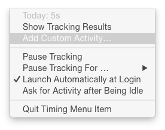

The Timing menu item is a tiny utility sitting in your menu bar that automatically tracks your activities. It looks like this: 
As long as the menu item isn't running, Timing won't be able to record the time you spend using your computer. Much care has been taken to ensure that the menu item will not slow down your Mac in any way.
Even though the menu item's primary purpose is to track your activities, it provides some
additional useful options:

- Today: Shows the total time recorded by Timing today.
- Show Tracking Results: Launches Timing, where you can view your recorded activities.
- Add Custom Activity (Lion only): Shows a form to manually enter an activity. This way, you can e.g. also track phone calls and other non-computer activity, with Timing.
- Pause/Resume Tracking: While tracking is paused, Timing won't track any activities. This mode is also indicated via a grayed menu item:

- Pause Tracking For ...: Lets you pause tracking for a specific period of time. Afterward, tracking is resumed automatically.
- Launch Automatically at Login: As the menu item needs to be running in order for Timing to track activities, it should be started right when you log in. This menu item controls this behavior.
- Ask for Activity after Being Idle (Lion only): If enabled, the custom-activity form will be shown automatically each time you return to your Mac after having been idle.